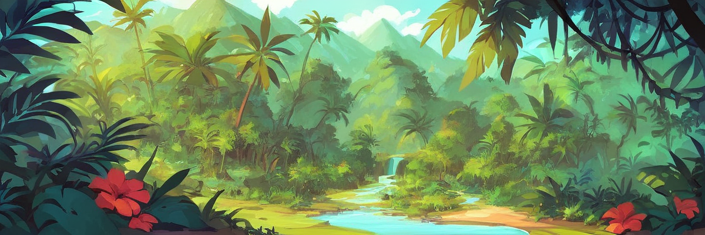

Valor ecológico
Los polinizadores tienen un papel fundamental en los ecosistemas. Gracias a ellos, miles de plantas pueden reproducirse y seguir formando parte del paisaje natural. Cuando un insecto, ave o murciélago lleva polen de una flor a otra, permite que nazcan nuevas semillas y frutos, lo cual alimenta a otros animales y ayuda a que los bosques, selvas y campos se mantengan sanos. Más del 80% de las plantas con flores del mundo dependen de los polinizadores para reproducirse. Sin ellos, muchos árboles dejarían de crecer, disminuirían los frutos silvestres y se rompería la cadena alimenticia. Además, algunos polinizadores también dispersan semillas, airean el suelo o controlan plagas, lo que mantiene el equilibrio natural. Proteger a los polinizadores es proteger la vida.
Impacto en la agricultura
Los polinizadores no solo son importantes para la naturaleza, también lo son para nuestra comida. Se calcula que más del 75% de los cultivos alimentarios del mundo dependen, al menos en parte, de la polinización. Esto incluye frutas como manzanas, fresas, sandías y mangos, pero también verduras, nueces, especias y hasta el cacao (con el que se hace el chocolate).
En México, cultivos como el chile, el jitomate, el aguacate y la calabaza también dependen de la visita de abejas y otros polinizadores. La FAO (Organización de las Naciones Unidas para la Alimentación y la Agricultura) advierte que, si los polinizadores desaparecen, muchas de nuestras cosechas bajarían de calidad y cantidad, y los precios subirían. Además, algunos cultivos como el agave (de donde se obtiene el mezcal y el tequila) dependen de polinizadores como los murciélagos, lo que demuestra cómo la naturaleza y la economía están conectadas. Sin polinizadores, habría menos comida, menos variedad y más problemas para todos.